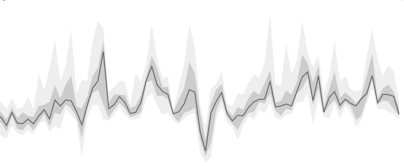

Obama for America: Project Atlas
I led the concepting, wireframing and development for one of the Obama campaign's voter-facing apps. It was released through the President's Twitter account, where it reached his 42 million followers.


Rx Treatment Flow
I was a data visualization engineer for a Peter Thiel-funded startup. I led the design of a data visualization, generated entirely with patient records, for exploring diabetes treatments.

Seeing the Air
Seeing the Air is a winning entry in a data visualization competition sponsored by Swissnex, Gray Area and Lift. Competing against 75 teams under a tight deadline, I led the wireframing, visual design and front-end programming.

Using a Network Simulation in UX Design
Seeing the Air is a winning entry in a data visualization competition sponsored by Swissnex, Gray Area and Lift. Competing against 75 teams under a tight deadline, I led the wireframing, visual design and front-end programming.